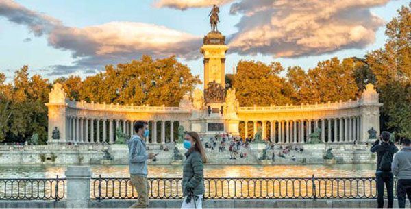
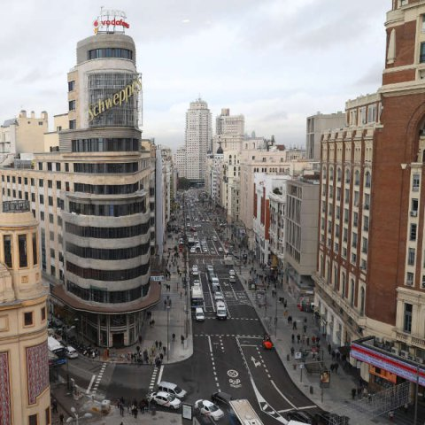

Madrid
Madrid es un municipio y una ciudad de España, con categoría histórica de villa. Constituye la capital del Estado y de la Comunidad de Madrid. En su término municipal, el más poblado de España, viven 3.334.730 personas empadronadas, según el INE de 2020. El área metropolitana asociada tiene una población de 6.779.888 habitantes, la segunda de la Unión Europea, según la fuente, tras la de París, y en otras fuentes detrás también de la Región del Ruhr, así como la segunda ciudad más poblada de la Unión Europea, por detrás de Berlín.
La ciudad cuenta con un PIB nominal de 133.129 millones de euros –el 12% del PIB nacional– y un PIB per cápita nominal de 41.600 € (2018), siendo la 1ª área metropolitana española en actividad económica ––19% del PIB. Es también la primera en más pernoctaciones hoteleras.
En calidad de capital de España, alberga las sedes del Gobierno de España y sus Ministerios, de las Cortes Generales (Congreso y Senado), del Tribunal Supremo y del Tribunal Constitucional, así como la residencia oficial de los reyes de España y del presidente del Gobierno. En el plano económico, es la cuarta ciudad más rica de Europa, tras Londres, París y Moscú. En 2009, el 50,1% de los ingresos de las 5000 principales empresas españolas son generados por sociedades con sede social en Madrid, que suponen el 31,8% de ellas. Es sede del 4ª mayor mercado de valores de Europa, 2ª en el ámbito iberoamericano (Latibex) y de varias de las más grandes corporaciones del mundo. Es la 8ª ciudad del mundo con mayor presencia de multinacionales, tras Pekín y Milán y por delante de Dubái, París y Nueva York.
En el plano internacional acoge la sede central de la Organización Mundial del Turismo (OMT), perteneciente a la ONU, la sede de la Organización Internacional de Comisiones de Valores (OICV), la sede de la Secretaría General Iberoamericana (SEGIB), la sede de la Organización de Estados Iberoamericanos para la Educación, la Ciencia y la Cultura (OEI), la Organismo Internacional de Juventud para Iberoamérica (OIJ), y la sede de Public Interest Oversight Board (PIOB). También alberga las principales instituciones internacionales reguladoras y difusoras del idioma español: la Comisión Permanente de la Asociación de Academias de la Lengua Española, y sedes centrales de la Real Academia Española (RAE), del Instituto Cervantes y de la Fundación del Español Urgente (Fundeu). Madrid organiza ferias como FITUR, Madrid Fusión, ARCO, SIMO TCI, el Salón del Automóvil y la Cibeles Madrid Fashion Week.
Es un influyente centro cultural y cuenta con museos de referencia internacional, entre los que destacan el Museo del Prado, el Museo Nacional Centro de Arte Reina Sofía, el Thyssen-Bornemisza y CaixaForum Madrid, que ocupan, respectivamente, el 14º, 10º, 67º y 79º puesto entre los museos más visitados del mundo. El Museo del Prado se considera la mayor pinacoteca del mundo. Desde julio de 2021, el Paseo del Prado, el Parque del Retiro y el Barrio de los Jerónimos han sido incluidos en la lista de Patrimonio de la Humanidad por la Unesco formando el llamado Paisaje de la Luz, paisaje de las artes y las ciencias, con sus museos e instituciones.
Los orígenes de la ciudad son objeto de revisión histórica tras hallazgos de enterramientos visigodos, que han venido a confirmar que el posterior asentamiento fortificado musulmán de Magrit (del siglo IX) se había asentado sobre un vicus visigodo del siglo VII llamado Matrice o matriz (arroyo). Las excavaciones arqueológicas también desvelan restos que se atribuyen al Madrid romano, así como de restos que se remontan a los carpetanos o al periodo prerromano. No sería hasta el siglo XI cuando Madrid fue incorporada a la Corona de Castilla, tras su conquista por Alfonso VI de León en 1083. Fue designada como sede de la Corte por el rey Felipe II en 1561, convirtiéndose en la primera capital permanente de la monarquía española y ha mantenido la capitalidad del país desde entonces, salvo por breves intervalos de tiempo.